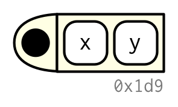
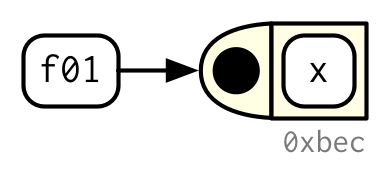
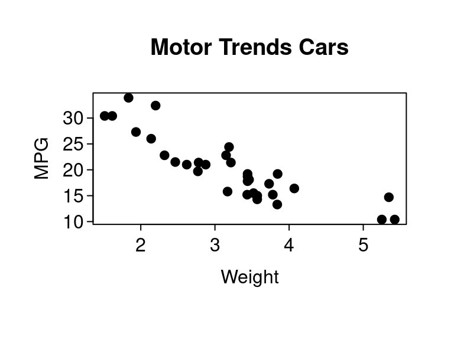
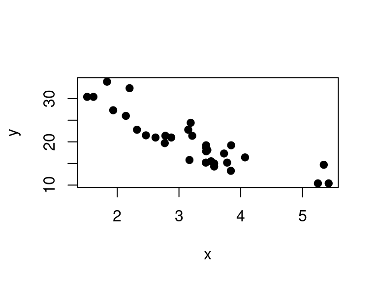

Functions
David Gerard
2022-02-15
Learning Objectives
- Formal characterization of functions.
- Chapter 6 from Advanced R
- These lecture notes are mostly taken straight out of Hadley’s book. Many thanks for making my life easier.
- His images, which I use here, are licensed under

Components
A function has three parts:
- The
formals(), the list of arguments that control how you call the function. - The
body(), the code inside the function. - The function
environment()(sometimes called “enclosing environment”), the data structure that determines how the function finds the values associated with the names.
square <- function(x) {
x^2
}
formals(square)## $xbody(square)## {
## x^2
## }environment(square)## <environment: R_GlobalEnv>Below: Black dot is function environment (aka enclosing environment) where the function finds objects, squares are arguments. Body is not graphed.

Exception: Many base functions are written directly in C and don’t have these three components.
typeof(square)## [1] "closure"typeof(sum)## [1] "builtin"typeof(`[[`)## [1] "special"body(sum)## NULLformals(sum)## NULL
First class functions
Functions are objects, just like any other variable.
Sometimes, functions are called closures because they “enclose” their environments (see Chapter 7). That’s why you sometimes see the error
lm[1]## Error in lm[1]: object of type 'closure' is not subsettableI.e., you cannot subset a function.
So you can pass functions as arguments in a function (like in
optim()).f <- function(par, dat) { sum((par - dat)^2) } dat <- rnorm(100) oout <- optim(par = 0, fn = f, dat = dat, method = "L-BFGS-B") oout$par## [1] -0.1456mean(dat)## [1] -0.1456Functions can return other functions (like in
ecdf()).x <- c(1, 99, 2, 11) efun <- ecdf(x) efun(10)## [1] 0.5Functions can be elements of a list.
funs <- list( half = function(x) x / 2, double = function(x) x * 2 ) funs$double(10)## [1] 20Because functions are objects, Hadley graphically represents name bindings in a similar way to variables:

Functions can also be anonymous in R
(function(x) x^2)(2)## [1] 4(function(x) x^2)(3)## [1] 9- This is most often used when you don’t want to be bothered with thinking up a name.
## Integrate anonymous function from -infinity to infinity integrate(function(x) exp(-x^2), -Inf, Inf)## 1.772 with absolute error < 4.3e-06## apply anonymous function to each column of mtcars sapply(mtcars, function(x) length(unique(x)))## mpg cyl disp hp drat wt qsec vs am gear carb ## 25 3 27 22 22 29 30 2 2 3 6
Lexical Scoping
Scoping is the act of finding a value associated with a name. That is, you have
xas a variable name in different parts of a program. When does it point to some objects versus others?E.g., when is
xpointing to 20 versus 10 in the code below?x <- 10 g01 <- function() { x <- 20 x }xpoints to 10 outside of the function, and points to 20 inside of the function.
R uses lexical scoping, meaning that a name refers to an object based on when the function is defined.
In a lexically scoped language, a block defines a new scope. Variables are defined/declared in that scope and are not visible outside of that scope. Blocks can be nested, and when a variable is defined in an outer block, then it is visible in the inner block. But variables defined in the inner block are not defined in the outer block. E.g.
outer_var <- 10 f <- function() { print(outer_var) inner_var <- 1 } f() ## outer_var is available in inner block though it is defined in outer block.## [1] 10inner_var ## inner_var not available in outer block because defined in inner block.## Error in eval(expr, envir, enclos): object 'inner_var' not foundOther types of scoping exist, such as dynamic scoping, meaning that a name refers to an object based on when the function is called. Most languages don’t use dynamic scope. One language that does use dynamic scope is bash.
Let’s formalize this mechanism.
Name Masking
Names inside a function mask names defined outside a function.
If a name is not defined in a function, R looks up one level.
x <- 2 y <- 20 g03 <- function() { y <- 1 return(c(x, y)) } g03()## [1] 2 1# This doesn't change the previous value of y y## [1] 20If a function is defined inside a function, then it keeps looking up levels until it finds a variable.
Below, the inner function finds
zinside the inner function, findsyin the outer function, and findsxoutside both functions.x <- 1 f1 <- function() { y <- 2 f2 <- function() { z <- 3 return(c(x, y, z)) } return(f2()) } f1()## [1] 1 2 3
A fresh start
Each time a function is called, it creates a new environment to execute in (called the “execution environment”).
This means it does not remember what happened last time.
a <- 2 g11 <- function() { a <- a + 1 return(a) } g11()## [1] 3g11()## [1] 3
Functions versus variables
Functions and variables can share names (though, this is not a good idea).
sum <- c(10, 11) sum(sum)## [1] 21This is allowed since the function and the variable are in different environments. The
sumobject is in the global environment while thesum()function is in thepackage:baseenvironment. More on this in Chapter 7.rlang::env_has(env = rlang::global_env(), nms = "sum")## sum ## TRUErlang::env_has(env = rlang::env_parents()[["package:base"]], nms = "sum")## sum ## TRUE
Dynamic lookup
R determines where to look at function creation time (e.g. one level up), but it determines what is there at evaluation time.
a <- 1 g11()## [1] 2a <- 12 g11()## [1] 13
Advanced R Exercises
What does the following code return? Why? Describe how each of the three c’s is interpreted.
c <- 10 c(c = c)What does the following function return? Make a prediction before running the code yourself.
f <- function(x) { f <- function(x) { f <- function() { x ^ 2 } f() + 1 } f(x) * 2 } f(10)
Lazy Evaluation
lazy evaluation is where a variable is only evaluated if used.
R arguments are lazily evaluated. So the following does not show an error, even though
xis not defined.f <- function(x) { return(10) } f()## [1] 10In R, lazy evaluation is done via a promise data object, which is described in Chapter 20.
But an important consequence of lazy evaluation is that default arguments can be defined in terms of other arguments.
h04 <- function(x = NULL, y = x * 2, z = a + b) { a <- 10 b <- 100 if (is.null(x)) { x <- 4 } c(x, y, z) } h04()## [1] 4 8 110I’ve used this property before, e.g., for choosing initial values of an optimization approach based on the input data.
Default arguments are evaluated inside the function the first time the argument is used.
User supplied arguments are evaluated outside the function.
This example from Advanced R blew my mind:
h05 <- function(x = ls()) { ## ls() is default argument a <- 1 x } # ls() evaluated inside h05: h05()## [1] "a" "x"# ls() evaluated in global environment: h05(ls()) ## ls() is user supplied## [1] "a" "dat" "efun" "f" "f1" "funs" ## [7] "g01" "g03" "g11" "h04" "h05" "oout" ## [13] "outer_var" "square" "sum" "x" "y"Exercise (Advanced R): What does this function return? Why? Try to guess before evaluating them.
f2 <- function(x = z) { z <- 100 x } f2()Exercise (Advanced R): What does this function return? Why? Try to guess before evaluating them.
y <- 10 f1 <- function(x = {y <- 1; 2}, y = 0) { c(x, y) } f1() yExercise: What does this function return on these calls? Why? Try to guess before evaluating them.
f1 <- function(x, y = x^2) { x <- x + 1 return(y) } f1(1) x <- 1 f1(x, x^2)
... (dot-dot-dot)
In R, the dot-dot-dot argument is a special argument which allows a function to take any number of additional arguments beyond those defined by the user.
This is used all over the place in R. See
seq(),optim(),plot(),print(), etc…In computer science, this type of argument is called a “varargs” (for variable arguments).
Typically, you either do one of two things with
...in a function:Assign arguments to a list.
args <- list(...)Pass arguments to another function.
fn(...)
E.g. I pass the extra arguments to a list so that I can check if they are
NULLin the list, then I pass the extra arguments toplot().plotd <- function(x, y, ...) { args <- list(...) args$x <- x args$y <- y if (is.null(args$pch)) { args$pch <- 16 } if (is.null(args$mar)) { args$mar <- c(3, 3, 2, 1) } if (is.null(args$mgp)) { args$mgp <- c(1.8, 0.4, 0) } if (is.null(args$las)) { args$las <- 1 } if (is.null(args$tcl)) { args$tcl <- -0.25 } do.call(what = plot, args = args) }I can pass more arguments to this function, or overwrite defaults
plotd(x = mtcars$wt, y = mtcars$mpg, main = "Motor Trends Cars", xlab = "Weight", ylab = "MPG", pch = 19)
do.call()is one way to call a function. You write the name of the function and provide a list of its arguments.Exercise: Why do you think we get an error here?
plot2 <- function(x, y, ...) { if (!hasArg(pch)) { pch <- 16 cat("pch assigned") } plot(x = x, y = y, pch = pch) } plot2(mtcars$wt, mtcars$mpg) plot2(mtcars$wt, mtcars$mpg, pch = 19)If you want to just change one default, it is perhaps better to just include it as an additional argument.
plot3 <- function(x, y, pch = 16, ...) { plot(x = x, y = y, pch = pch, ...) } plot3(mtcars$wt, mtcars$mpg)plot3(mtcars$wt, mtcars$mpg, pch = 19)
Function exits
Implicit versus explicit returns
R will return the last evaluated expression by default:
f <- function(x, y) { y x } f(1, 2)## [1] 1I prefer to explicitly include a
return()call:f <- function(x, y) { y return(x) } f(1, 2)## [1] 1
Visible versus invisible returns
A visible return prints the result:
f <- function(x) { return(x) } f(1)## [1] 1You can prevent automatic printing by applying
invisible().f <- function(x) { return(invisible(x)) } f(1)We can print the value with
print().f(1) |> print()## [1] 1or by enclosing in parentheses:
(f(1))## [1] 1Assignment is a function with returns invisibly:
x <- 1 (x <- 1)## [1] 1You might be surprised that assignment is a function, but remember in R almost everything is a function. Prefix notation might make it more clear:
`<-`(x, 10) x## [1] 10invisible()returns are often used for arguments whose main purpose are side effects (likeprint()orplot()functions), so that you can chain arguments.a <- b <- c <- d <- 2 a## [1] 2b## [1] 2c## [1] 2d## [1] 2
Exit handlers
If you change the global state (e.g. the
options()arguments), then it is polite to revert back on exit.Use
on.exit()to do so, settingadd = TRUEto not overwrite previous exit handlers.cleanup <- function(dir, code) { old_dir <- setwd(dir) on.exit(setwd(old_dir), add = TRUE) # I can now change the working directory with impunity old_opt <- options(stringsAsFactors = FALSE) on.exit(options(old_opt), add = TRUE) # I can now change the options with impunity }I have used this in real life when manipulating the parallelization backend using the
{foreach}packageoldDoPar <- doFuture::registerDoFuture() on.exit(with(oldDoPar, foreach::setDoPar(fun=fun, data=data, info=info)), add = TRUE)
Function Forms
Hadley’s Function Forms:
- prefix: the function name comes before its arguments, like
foofy(a, b, c). These constitute of the majority of function calls in R. - infix: the function name comes in between its arguments, like
x + y. Infix forms are used for many mathematical operators, and for user-defined functions that begin and end with%. - replacement: functions that replace values by assignment, like
names(df) <- c("a", "b", "c"). They actually look like prefix functions. - special: functions like
[[,if, andfor. While they don’t have a consistent structure, they play important roles in R’s syntax.
- prefix: the function name comes before its arguments, like
You can rewrite all forms in prefix form
x + y ## infix## [1] 30`+`(x, y) ## prefix## [1] 30df <- data.frame(1:2, c("a", "b"), c(TRUE, FALSE)) names(df) <- c("x", "y", "z") ## replacement `names<-`(df, c("x", "y", "z")) ## prefix## x y z ## 1 1 a TRUE ## 2 2 b FALSEfor(i in 1:10) print(i) ## special## [1] 1 ## [1] 2 ## [1] 3 ## [1] 4 ## [1] 5 ## [1] 6 ## [1] 7 ## [1] 8 ## [1] 9 ## [1] 10`for`(i, 1:10, print(i)) ## prefix## [1] 1 ## [1] 2 ## [1] 3 ## [1] 4 ## [1] 5 ## [1] 6 ## [1] 7 ## [1] 8 ## [1] 9 ## [1] 10You can create your own infix functions by starting and ending them with
%`%+%` <- function(a, b) paste0(a, b) "hello" %+% "world"## [1] "helloworld"You can create your own replacement functions.
- They must end in
<- - They must have arguments
xandvalueand - They must return the modified argument.
- They must end in
The following will replace the second element
`second<-` <- function(x, value) { x[2] <- value x } x <- 1:10 second(x) <- 12 x## [1] 1 12 3 4 5 6 7 8 9 10You can include additional arguments by placing them between
xandvalueand including them on the left-hand size.`modify<-` <- function(x, position, value) { x[position] <- value x } modify(x, 1) <- 10 x## [1] 10 12 3 4 5 6 7 8 9 10
Advanced R Exercises:
Rewrite the following code snippets into prefix form:
1 + 2 + 3## [1] 61 + (2 + 3)## [1] 6if (length(x) <= 5) x[[length(x)]] else x[[5]]## [1] 5- For the last one, make sure to convert
if,else,[[, and<=all into prefix form.
- For the last one, make sure to convert
Create a replacement function called
rmod()that modifies a random location in a vector. E.g.set.seed(1) x <- 1:10 rmod(x) <- NA x## [1] 1 2 3 4 5 6 7 8 NA 10rmod(x) <- NA x## [1] 1 2 3 NA 5 6 7 8 NA 10Write your own version of
+that pastes its inputs together if they are character vectors but behaves as usual otherwise. In other words, make this code work:1 + 2## [1] 3"a" + "b"## [1] "ab"- Hint: Look at the source code of
+.
- Hint: Look at the source code of
Create an infix
xor()operator. Call it%x|%. E.g.c(TRUE, TRUE, FALSE, FALSE) %x|% c(TRUE, FALSE, TRUE, FALSE)## [1] FALSE TRUE TRUE FALSECreate infix versions of the set functions
intersect(),union(), andsetdiff(). You might call them%n%,%u%, and%/%to match conventions from mathematics.
New functions:
do.call(): Run a function with a list of arguments.invisible(): Return without automatic printing.on.exit(): Runs an expression when the function exits, whether naturally or by an error.

This work is licensed under a Creative Commons Attribution-NonCommercial 4.0 International License.